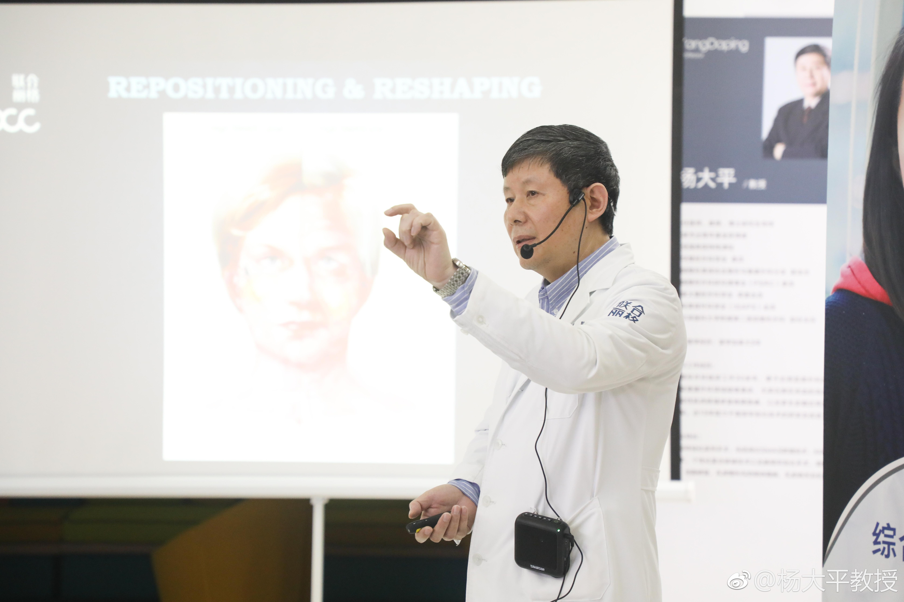
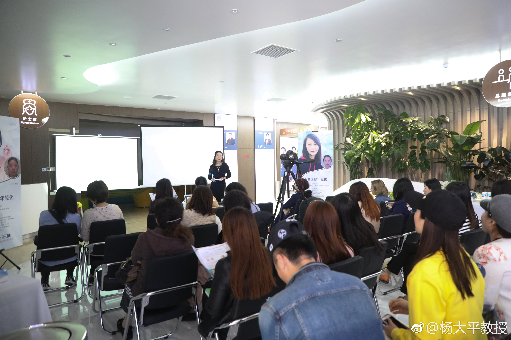
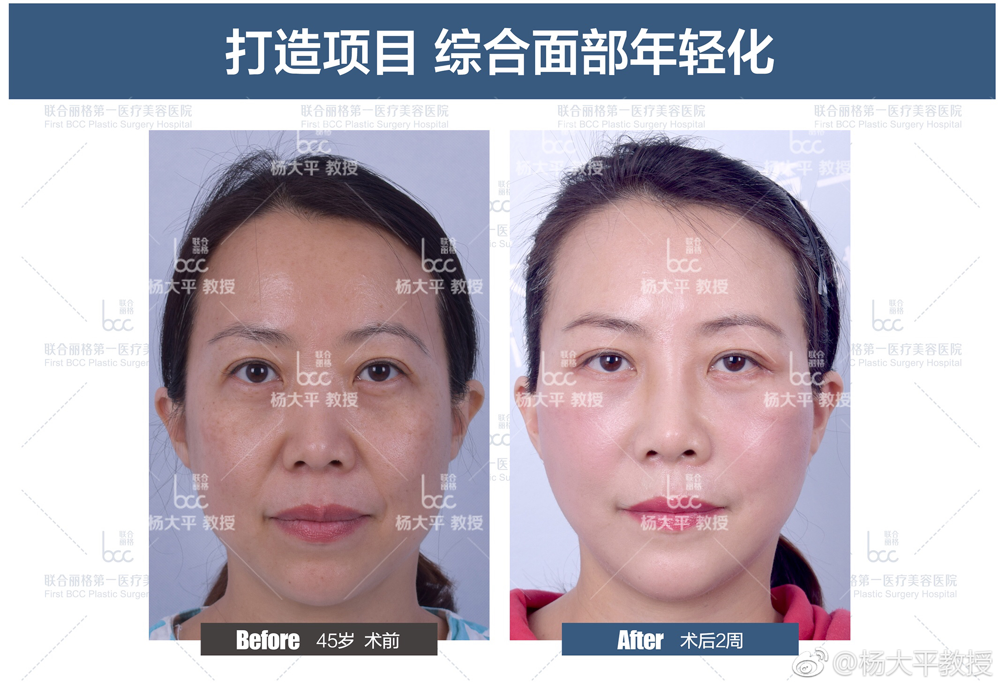

感谢杨教授的精湛技术和精益求精的治学态度。很庆幸做了这个年轻化手术，目前在持续受益中，从外表到心情到心理...... 同时也感谢@隋小夫 隋冰医生。@杨大平教授:昨天医院举办了一场小型的面部年轻化真人分享会，这种近距离的接触和交流，对于准备手术或有意愿改善下垂症状的求美者有着积极的意义，因为她们能看到真实的、动态的效果。未来的日子，我们还会继续组织这种真实患者的分享会，而且我希望不单单局限于美容类，还应包括不明注射物取出、晚期性面瘫修复等修复手术的术后分享。分享的价值在于扩大医患信息对称维度，求美者应该对自己将要接受的手术了解得更多。最后，要感谢出席分享会的李女士，也谢谢到场的各位求美者。